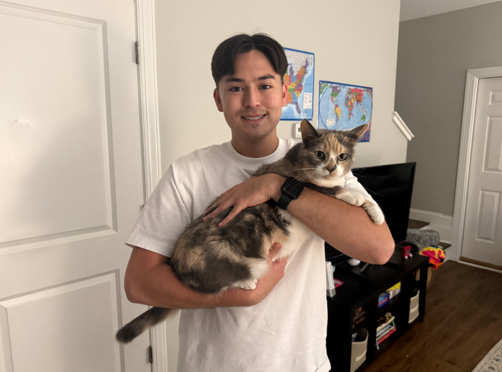

Brian Mellinger ~ Benevolent Moose ~ ITIS 3135 Introduction
Introduction
Brian Mellinger: Introduction

Photo of Brian with Buffy
Personal Background: I am a native North Carolina resident that now lives in Charlotte! I have also lived briefy in
Arizona. I am in Charlotte so that I can study to become a Computer Scientist at the University of North Carolina at Charlotte.
Professional Background: Before going to college, I enlisted in the North Carolina Army National Guard as an Intelligence Analyst.
I frequently enjoy learning about security and I also enjoy helping others.
Academic Background: I am now a junior in Computer Science and I am in the cybersecurity concentration.
Background in this Subject: I have very little background in web development but I am excited to learn.
Primary Computer Platform: Asus, Microsoft Windows 11, I primarily work at home
Courses I'm Taking & Why:
MSCI 3101/3101L - Adaptive Team Leadership/Lab: This is Army ROTC, I am taking this course in hopes to become an Army Reserve
Cybersecurity Officer. I also love the physical and mental challenge and want to progress my current professional career.
ITSC 2600 - Computer Science, Program, Identity, Career: Required to take this as it is my first semester at UNCC.
ITIS 3135 - Front-End Web Application Development: Required to take this, however, I am excited to take my first course that
is front end oriented.
ITSC 3146 - Introduction to Operating Systems & Networks: Required to take this course.
ITSC 2175 - Logic and Algorithms: Required to take this course.
Funny/Interesting Item to Remember me by: I originally did not like cats, however, I used to watch a kitten run away from freshman
girls at North Carolina State University near their dorms almost everyday. One day it walked up to me and let me hold her. I failed to
relocate her to a new home and she's been with me for two years now.